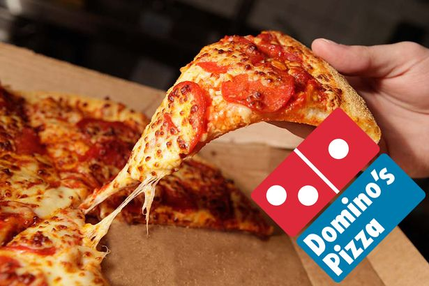

Much has happened since our dad, Donald Stolfe, traded his prized 1962 Oldsmobile Starfire to open the first Donnie’s in a small storefront on the south side of Chicago. We no longer play records, we download tunes. We chat online, not over the neighbor’s fence. The Donnie’s family has undergone changes as well! We have opened new restaurants and expanded into frozen foods nationwide. There are some things, however, that have not changed. We are still family owned. We are still obsessed with quality and service. And Dad still has the final word! We hope you will all be customers for 50 more years!